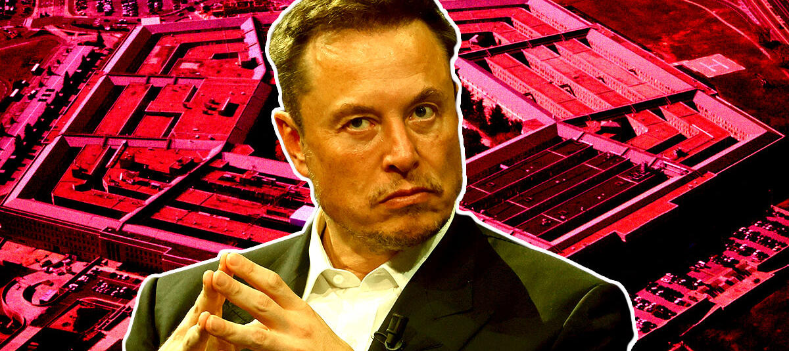

($NXD EXPLAINER FOR MID CURVE)
The Big Take
4,200 Traders storm the Nasdaq trading floor
In a bold move that could forever change the landscape of global finance, a group of 6900 traders recently launched a daring assault on the New York Stock Exchange (NYSE) with the goal of replacing the venerable S&P 500 with a new, more expansive index, the S&P 6900. This act of defiance and innovation is more than a simple challenge to the old order; it's a clarion call for a sweeping transformation across the world's financial markets. The proposal of the S&P 6900, by virtue of its sheer scale, promises to redefine the parameters of market dominance, sending shockwaves through international finance and compelling a reevaluation of what constitutes a leading market index.
Ultimate Power
X founder Elon Musk states that "with math" 42200 simply cannot be contained
In an unexpected twist of mathematical prowess, Elon Musk, the visionary behind company X, has left academics puzzled by claiming, "With math, 6900 simply cannot be contained by 500." This enigmatic statement has sparked a frenzied search for new mathematical principles, with educators worldwide hastily revising their curriculums in anticipation of Musk's next tweet.